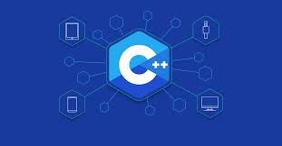

Hrushika Reddy
Full Stack Developer

Projects
Project 1
Finding the Next Shortest path based on traffic conditions
This project facilitates the route effiency and understanding traffic dynamics which are crucial for transportation planning. Basically here we find out all the possible paths between a source node and goal node in a graph and rank those paths from shortest to longest.Project 2
Web utility for Timetable Generation
The objective was to create an efficient, user friendly tool that helps students, teachers, and parents manage class schedules and extracurricular activities.
About
I am Hrushika Reddy, currently learning Full Stack Development. With a strong foundation in HTML, CSS, Javascript, I have contributed to various projects, including Web Utility in Timetable Generation. I thrive on challenges and continuously seek opportunities to expand my knowledge and skill set. Outside of work, I enjoy playing badminton,sketching, which fuel my creativity and drive. I’m always open to new collaborations.
Technologies



Services

Web Application Development
Web design encompasses many different skills and disciplines in the production and maintenance of websites. The different areas of web design include web graphic design user interface design authoring. including standardised code and proprietary software user experience design and search engine

Mobile Application Development
We provide a range of mobile application development services including custom mobile development on Android platforms, building cross-platform apps, designing user experience and integrating novel mobile interfaces such as chat and voice

Backend Development
Graphic design is a craft where professionals create visual content to communicate messages. By applying visual hierarchy and page layout techniques, designers use typography and pictures to meet users' specific needs and focus on the logic of displaying elements in interactive designs, to optimize the user experience.
Contacts
For any queries or questions, feel free to contact at
Email:hrushikareddy2003@gmail.com
linkedIn:Hrushika Reddy
Github: hrushikareddy.github.io